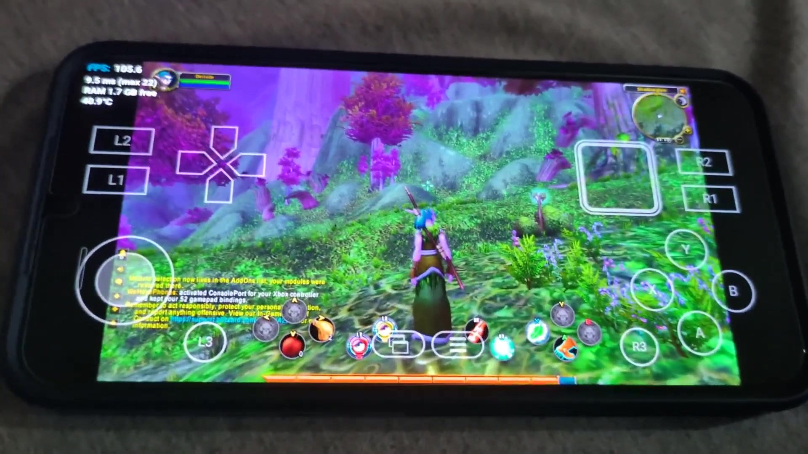

Bring your controller
World of Warcraft: Forever has built-in controller support. For Retail and Classic, we provide ConsolePort out of the box.
We do have phones. And also Wine.
Play WoW on Android, no streaming, with controllers and your favorite addons.
Early build. Expect bugs and rough edges.

A Winlator fork built for World of Warcraft and Battle.net on Android.
World of Warcraft: Forever has built-in controller support. For Retail and Classic, we provide ConsolePort out of the box.
Manage addons from inside the app, or use the optional CurseForge and WowUp apps. Less file juggling, more time in game.
Already installed on a PC? Import your WoW folder, then let Battle.net finish the updates.
See how importing worksDownload the APK from GitHub, install it, and follow Setup in the app. Then you're ready to press Play.
Read the installation guideA 64-bit ARM phone running Android 8.0 or newer, enough storage for the game, and your own Blizzard account and game license. Performance varies by device.
No. WeHavePhones runs the Windows version of World of Warcraft on the phone itself, using Wine. Nothing is streamed from a PC or the cloud, so you don't need Steam Link, Moonlight or GeForce Now.
Download the latest APK from GitHub Releases and allow your browser or file manager to install it. Open WeHavePhones and follow Setup to prepare the container, install Battle.net, and download or import WoW.
Download it only from the project's GitHub Releases. The source code is public under the MIT license, and each release lists SHA-256 checksums for its files. Official builds are signed with the certificate whose SHA-256 fingerprint is 72:79:47:E7:30:A7:F2:37:13:BC:6D:2B:89:EF:33:AD:1C:C1:11:8B:D8:67:DA:A8:CB:C9:81:25:0A:07:48:95. Android refuses updates signed with any other key.
Yes. WeHavePhones is free and open source. You still need your own Blizzard account and a WoW license, including a subscription for the versions that require one.
No. WeHavePhones is an independent, unofficial project, and it includes no Blizzard game files. Blizzard does not officially support Wine or Android. See the project disclaimer for details.